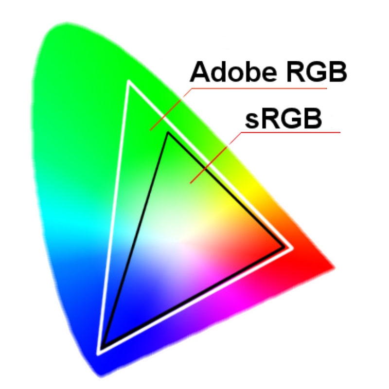

Ideas Principales
- Impacto Psicológico y Emocional: Los colores afectan las emociones y percepciones del usuario. Elegir colores adecuados puede reforzar el mensaje y la identidad de la marca.
- Paleta de Colores Se utiliza una combinación de colores primarios, secundarios y neutrales para crear una identidad coherente, agradable y funcional.
- Contraste para Legibilidad: Es esencial que haya suficiente contraste entre el texto y el fondo para asegurar que el contenido sea legible y accesible, especialmente para personas con dificultades visuales.
- Accesibilidad: Los colores deben ser elegidos cuidadosamente para ser accesibles a todos los usuarios, incluidos aquellos con daltonismo o deficiencias visuales. Es importante no depender únicamente del color para transmitir información.
- Usabilidad y Diseño Responsivo: Los colores deben contribuir a una buena experiencia de usuario, haciendo los botones y enlaces fáciles de identificar, además de adaptarse correctamente a diferentes dispositivos.
- Definición de Colores en CSS: Los colores se definen en CSS utilizando nombres de colores, códigos hexadecimales, valores RGB y HSL.
- Modo Claro y Oscuro: Permitir a los usuarios elegir entre un modo claro u oscuro puede mejorar la comodidad visual según el entorno de uso y las preferencias personales.
Apuntes de Clase
Cuando se trabaja con pantallas se utiliza el sRGB que es Standar Red, Green, Blue, 4 formas de representar colores: Keywords, Headecimal, RGB,HSL
